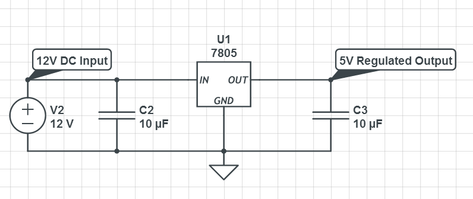
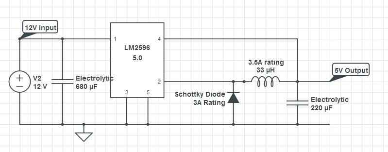

Powering up raspberry pi from a battery pack
Usually, we find batteries giving 12 Volts output which needs to be stepped down to 5V or 3.3V for a typical embedded application. The following are the two methods which are equally good for their respective applications: (Although, you can buy this, a portable battery charger, and be done with it) :
Using a linear voltage regulator – 7805:
The main factor to be considered before using a 7805 is the current rating, i.e., the current that is to be drawn by the load. For a raspberry pi application, it is around 700mA which can go up to 1A or even more depending on the modules connected. The current rating of the TI made 7805 is 1.5A which seems to be okay for this application. But if you are going to connect Wi-Fi Module or Camera Module, you'd be really pushing the circuit to its limits.
Switching Mode Power Supply (Buck-Boost)
These basically chop the voltage by switching the input on and off at some frequency (and can also increase the voltage by exploiting the power of an inductor while chopping the supply). These are available at various efficiencies and various current ratings. The one I suggest for RPi is LM2596 from Texas Instruments. It can supply a 3A load i.e. you’d be able to power at least 3 servos whilst powering up a raspberry pi with multiple modules connected
When compared with 78xxs, these are extremely efficient and can save a lot of power. For the same reason, the heat produced is less
Here, 3.5A current rating for inductor is an over-design for RPi and if you believe that the maximum current wouldn’t touch 2A, buy one with 2.5A rating and if you think it is 1A buy the one with 1.5A rating.
The disadvantages in this case are:Tl;dr
Go for a portable battery charger if you're short on time and wide in wallet. For simple raspberry pi applications that don't use many modules (all at the same time), linear regulator should suffice. Otherwise, switched mode is the way to go.
Note - Important:
Don't forget to connect the heat sink in both the cases and take care about the ratings of the inductors, capacitors and diodes. Otherwise, the components might fry up. Also, the USB cables that you connect do matter. A cable made for 800mA wouldn't withstand 1.5A. Choose carefully